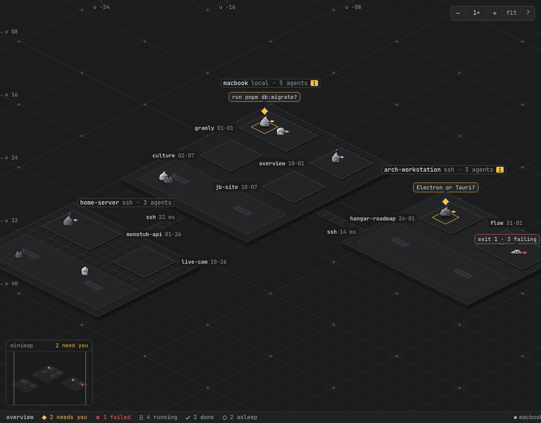

Which world do you see?
Four directions, each with real references. Pick the one closest to the view you have in mind, or point at single images ("this one, but…"). Images load from their original pages; licenses are as stated on those pages on 5 Nov 2026.
A · Organised blobs, our v3 what you said you preferred
Clean islands per machine, tidy plots, blobs at their desks, the commons. Calm and readable. What it lacks: life, and a reason for each place to exist.

B · A living office, top-down the genre's closest product
Pixel Agents already shows Claude Code sessions as pixel people in an office. Top-down three-quarter view, rooms, desks, a lounge. It works because every pixel comes from one cohesive professional pack.


C · An organic world: gardens, crops, a village your "vegetable" idea
Each project is a garden bed and work grows like a crop: running = growing, done = ripe, failed = wilted, waiting = a blob waving with a watering can. Each machine is a farmstead with one landmark (greenhouse, well, mill). Calm, alive and readable.


D · Isometric city, for comparison what v5 was reaching for
Rich when one artist draws everything; cheap the moment pieces come from different hands. Few free isometric packs are cohesive.


Sources: Pixel Agents · Sprout Lands · Kenney Tiny Town · Ninja Adventure · Isometric Pixel Garden · Isometric Coffee Shop · Isometric Cyberpunk City. The society model comes from The Sims' needs-based AI (GMTK: The Genius AI Behind The Sims).